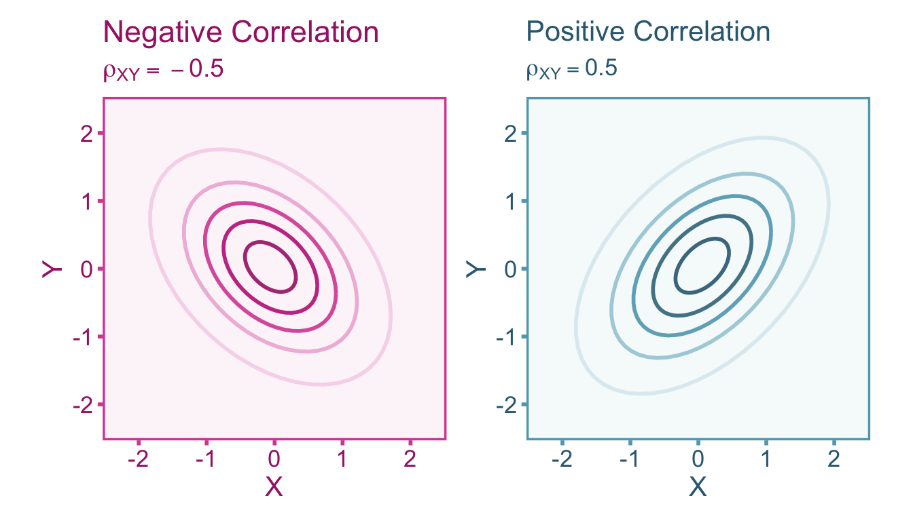
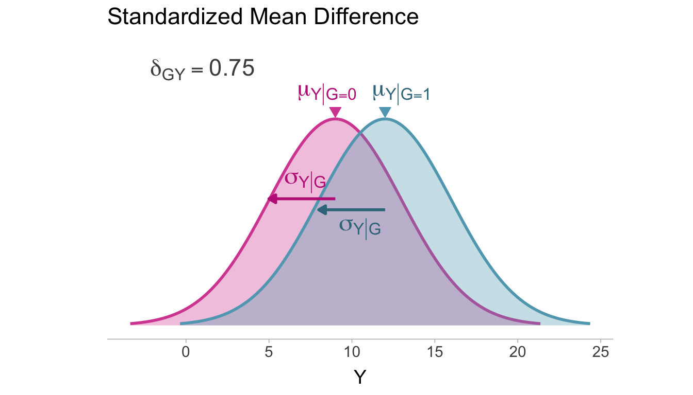
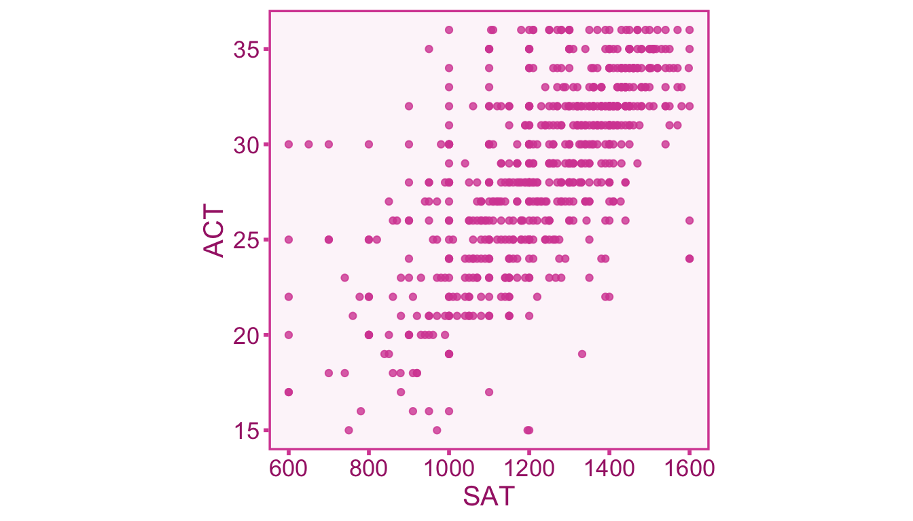
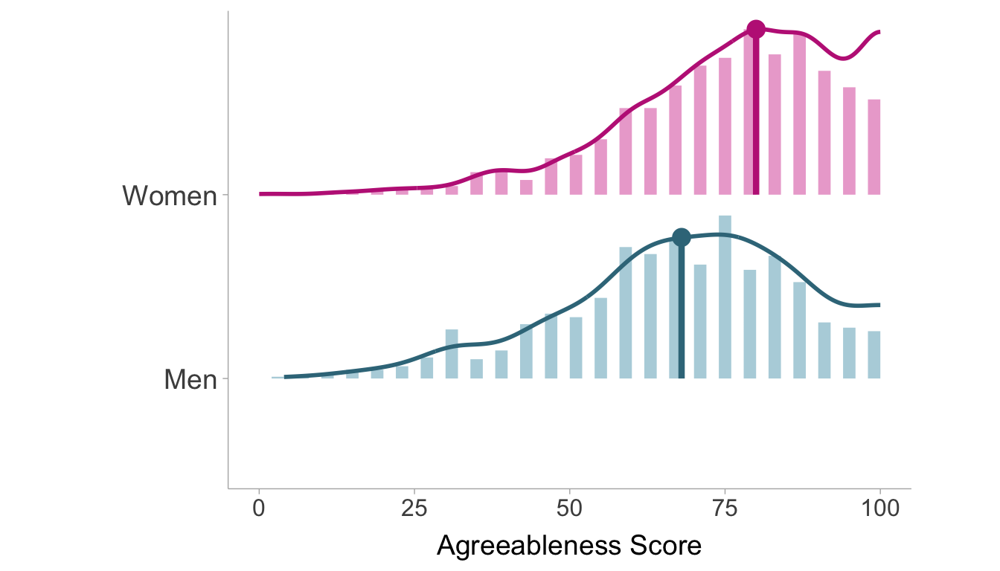
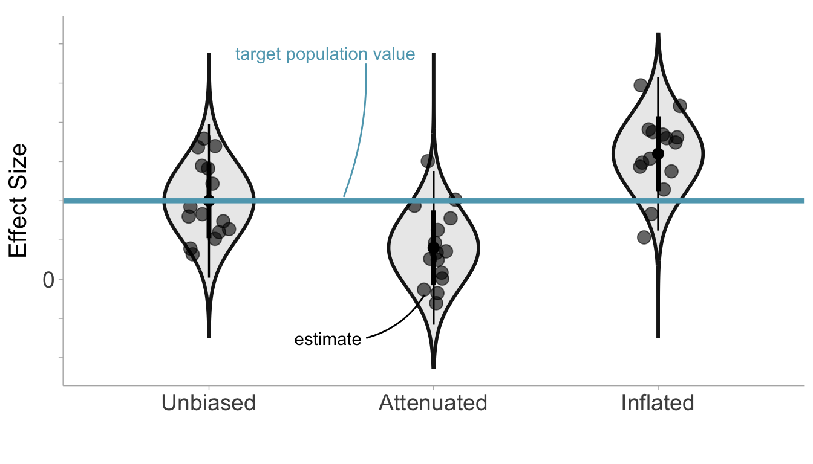

Samples and Effect Sizes
Effect Sizes
An effect size is a parameter that describes the association of two random variables1 (e.g., \(X\) and \(Y\)). Effect sizes are often used to quantify scientific research findings and are usually the target quantity in a research study. Using expected values, we can define two types of effect sizes that will be of primary focus throughout the book: correlations and standardized mean differences. A correlation can be defined as the standardized covariance between two variables (see Figure 1). For two continuous random variables, \(X\) and \(Y\), the correlation \(\rho_{XY}\) can be expressed as,
\[ \rho_{XY} = \frac{\sigma_{XY}}{\sigma_X\sigma_Y}. \tag{1}\]
However a correlation does not have to be between two continuous variables. Typically a correlation between a Bernoulli random variable and a continuous random variable is a point-biserial correlation and it is expressed similarly to Equation 1,
\[ \rho_{GY} := \frac{\sigma_{GY}}{\sigma_G\sigma_Y}. \tag{2}\]
The correlation coefficient is a bounded by -1 and 1.
The relationship between a Bernoulli random variable and a continuous random variable can alternatively be expressed as a standardized mean difference. A standardized mean difference is the mean difference between two groups standardized by the within-group standard deviation (see Figure 2). The groups are defined by the Bernoulli random variable and the standardized mean difference,
\[ \delta_{GY} := \frac{\mu_{Y|G=1}-\mu_{Y|G=0}}{\sigma_{Y|G}}. \tag{3}\]
Note that this formulation assumes homogeneity of variances between groups such that, \(\sigma_{Y|G}=\sigma_{Y|G=1}=\sigma_{Y|G=0}\).

Samples
For a researcher to make inferences about effect size parameters in the population of interest, they must draw a sample of individuals from the population. Ideally, sampling is done at random in order to produce unbiased estimates of the population effect size. In practice however, this is usually not possible. In cognitive and behavioral sciences, many studies are conducted on convenience samples that are sampled from a narrow subset of the population of interest. A non-random sample may not (on average) share the same composition of characteristics as the population of interest and thus may produce biased estimates of population effect size. Here we define a study sample \(\mathcal{S}\) as a random sample of eligible individuals, that is, individuals that the researcher has access to. The pool of eligible individuals \(\Psi_\mathsf{E}\) (i.e., the study population) is a subset of the population of interest \(\Psi\), therefore an eligible individual is any \(\psi\in\Psi_\mathsf{E} \subseteq \Psi\). The study sample \(\mathcal{S}\) is a random draw of \(n\) eligible individuals from the population of interest,
\[ \mathcal{S} := \{\psi_i \mid \psi_{1}\dots\psi_n \in_\text{R} \Psi_\mathsf{E} \subseteq \Psi\}, \]
where \(\in_\text{R}\) denotes a random draw from a set. The fibers \(\ell^{-1}(\psi_{1})...\ell^{-1}(\psi_{n})\) are all the possible outcomes for each individual in the study sample \(\mathcal{S}\). We will use the notation \(Y_i\), \(X_i\), and \(G_i\) to denote the true value of the random variable for an individual \(i\) (recall that the true value as defined here does not vary across possible outcomes of an individual, e.g., \(Y(\omega)\) for any \(\omega\in\ell^{-1}(\psi_i)\)).
Sample Estimates of Effect Sizes
The effect size in the population of interest is a fixed value that does not change from sample to sample. However, an estimate of the effect size from sample data will vary from sample to sample. We will denote sample estimates of effect sizes with English letters as opposed to the Greek letters we used for population effect sizes. The sample estimate of a correlation is computed via Pearson’s estimator [@pearson1895],
\[ r_{XY} := \frac{s_{XY}}{s_{X}s_{Y}} = \frac{\sum_{i=1}^n (X_i - m_{X})(Y_i - m_{Y})}{\sqrt{\sum_{i=1}^n (X_i - m_{X})^2}\sqrt{\sum_{i=1}^n (Y_i - m_{Y})^2}}, \tag{4}\]
Where \(m\) and \(s^2\) denote the sample estimates of the means and (co-)variances.
Example 1 (Relationship between Test Scores) In the United States, universities frequently require taking one of two standardized tests assessing academic ability, the Scholastic Achievement Test (SAT) and the American College Test (ACT). Since these tests are used interchangeably in university admission decisions, it is good to know how related the scores of these tests really are. A data set of 700 individuals who took both the SAT and the ACT from @revelle2010 can be used to estimate the correlation. The data set splits the SAT test into Quantitative (SATQ) and Verbal (SATV) subtests which each range from 200-800, whereas the ACT is reported as a score from 1-36. After removal of individuals who did not complete The Quantitative section of the SAT or who scored well below the expected guessing score (individuals with ACT < 5 and SATV/SATQ < 220), the final sample consisted of 681 individuals. We can plot out the relationship between the total SAT score (SATV + SATQ) and the ACT scores with a scatter plot (see Figure 3)

The resulting covariance matrix between variables is displayed in Table 1. The covariance matrix shows the covariance between all the variables in the model. Note that the covariance between a variable and itself is equal to the variance (e.g., \(\sigma_{XX}=\sigma^2_{X}\)). Therefore the diagonal (from top-left number to bottom-right number) of the matrix are the variances of each of the variable whereas the off-diagonal is are the covariances between pairs of variables.
| Test | ACT | SATQ | SATV | SAT |
|---|---|---|---|---|
| ACT | 22.37 | 328.32 | 297.36 | 625.69 |
| SATQ | 328.32 | 12669.09 | 7753.61 | 20422.70 |
| SATV | 297.36 | 7753.61 | 11898.10 | 19651.70 |
| SAT | 625.69 | 20422.70 | 19651.70 | 40074.40 |
The correlation coefficient between total SAT (the last column) and ACT (first column) can be computed using the formula in Equation 4. Let’s treat SAT as our X variable and the ACT be the Y variable:
\[ r_{XY} = \frac{s_{XY}}{s_X s_Y} = \frac{625.69}{\sqrt{40074.40} \times \sqrt{22.37}} = .66 \]
For an SMD, the commonly used estimate for comparison between two independent groups is Cohen’s estimator [@cohen1988],
\[ d_{GY} = \frac{m_{Y|G=1} - m_{Y|G=0}}{s_{Y|G}}. \]
This is commonly referred to as Cohen’s d or simply the d statistic. The sample estimate of the standard deviation of \(Y\) given \(G\) is the pooled within-group standard deviation,
\[ s_{Y|G} = \sqrt{\frac{(n_0 - 1)s^2_{Y|G=0} + (n_1 - 1)s^2_{Y|G=1}}{n_0 + n_1 -2}}. \]
The within-group sample size is denoted by \(n_0\) and \(n_1\) for \(G=0\) and \(G=1\), respectively. If there is reason to believe that the variances differ between groups, such that \(s_{Y|G=0}\neq s_{Y|G=1}\), then it may be best to standardize the mean difference with just one of the groups (usually a control/reference group).
Example 2 (Gender Differences in Agreeableness) In personality psychology the Big 5 personality traits are five dimensions where preferences and attitudes tend to vary along (Openness, Conscientiousness, Extraversion, Agreeableness, and Neuroticism). Agreeableness reflects a person’s cooperativeness, politeness, kindness, friendliness, and compassion. Agreeableness tends to differ on average between men and women with women generally scoring higher. Using a data set of 2800 participants from @goldberg1999, we can calculate the standardized mean difference from 2709 individuals who answered all of the items pertaining to agreeableness. The data set consists of 896 men and 1813 women who all responded to five statements related to agreeableness (e.g., “Inquire about others’ well-being”). Each participant self assessed the accuracy (from 1-Very Inaccurate to 6-Very Accurate) of each of the five statement with respect to themselves. Agreeableness is scored based on the average of their responses to all of the statements and POMP scored so 0 is the minimum possible score (very disagreeable) and 100 is the maximum possible score (very agreeable). The distributions within men and women are displayed in Figure 4.

The descriptive statistics for both groups are presented in Table 2. We find the mean agreeableness score of women in the sample is 75.50 whereas the mean for men is 67.55. We also find the standard deviation to be 17.10 and 18.63 in women and men, respectively.
| Gender | n | mean | sd |
|---|---|---|---|
| Women | 1813 | 75.50 | 17.10 |
| Men | 896 | 67.55 | 18.63 |
The sample estimate of the standardized mean difference can be computed with the following procedure:
- Calculate the mean difference (denoting \(G=1\) as women and \(G=0\) as men):
\[ m_{Y|G=1} - m_{Y|G=0} = 75.50 - 67.55 = 7.95 \]
- Then we can calculate the pooled standard deviation:
\[\begin{align} s_{Y|G} &= \sqrt{\frac{(n_0 - 1)s^2_{Y|G=0} + (n_1 - 1)s^2_{Y|G=1}}{n_0 + n_1 -2}} \\[.3em] &= \sqrt{\frac{(1812)17.10^2 + (895)18.63^2}{1812 + 895 -2}}\\[.3em] &= 17.63 \end{align}\]
- Then we can calculate the standardized mean difference:
\[ d_{GY} = \frac{m_{Y|G=1} - m_{Y|G=0}}{s_{Y|G}} = \frac{7.95}{17.63} = 0.45 \]
Errors in Effect Sizes
Random (Sampling) Errors
The target population effect size is the effect size of the random variables of interest in tge population of interest. The target populatuon effect size is a constant, unchanging value that remains fixed across samples. However, if we were to take a simple random sample from the population of interest such that the eligible population is synonymous with the population of interest, \(\Psi_\mathsf{E}=\Psi\). A sample estimate of an effect size varies from sample to sample (\(\mathcal{S}_1,\mathcal{S}_2,\dots\)) and does not exactly reflect the population value. This is due to the fact that randomly taking a subset of the population will contain inherent variability in the composition of the sample. Sampling errors describe the random deviations that we observe in effect size estimates from sample to sample [@barraza2019]. Sampling errors are random, however we will see in the next section that some errors are systematic. We can quantify sampling errors by the variance of the effect size estimator which is mostly a function of sample size (i.e., larger samples, smaller variance). To obtain estimates of sampling variance, we have to include assumptions about the joint distribution (unless we we used a non-parametric estimator, e.g., bootstrap). To calculate the sampling variance of Pearson’s correlation estimator we must first assume that \(X\) and \(Y\) follow a bivariate normal distribution,
\[ X,Y\sim\mathcal{N}_2\left(\begin{bmatrix} \mu_{X} \\ \mu_Y\end{bmatrix},\begin{bmatrix} \sigma^2_{X} & \sigma_{XY} \\ \sigma_{XY}&\sigma^2_{Y} \end{bmatrix}\right). \]
Given this assumption, the asymptotic sampling variance of the estimator is,
\[ \text{var}(r_{XY}) \overset{_\infty}{=} \frac{\left(1 - \rho_{XY}^2\right)^2}{n}. \tag{5}\]
Where \(\overset{_\infty}{=}\) denotes equivalency as \(n\rightarrow \infty\). The variance of an effect size estimator tends to be some function of sample size, where large samples will show less variance compared to small samples. For an illustration of sampling error, see Figure 5.

Systematic Errors
Sampling errors produce random errors in effect sizes, however, we can also observe systematic errors. Systematic errors are deviations from the target population value that are consistent across samples and produce bias in effect size estimates. In other words, effect size estimates will be on average larger or smaller than the target population value [@barraza2019]. Random sampling errors, on the other hand, will be larger or smaller than the target population value only by chance. Attenuation describes a type of systematic error where the effect size estimates are smaller than the target population value on average. Inflation on the other hand, is a type of bias that produce effect size estimates that are larger on average. An unbiased effect size would be one where there is no systematic errors and therefore, on average, it is equal to the population effect size. As we will see in future chapters, study artifacts such as selection effects and measurement error can produce effect sizes that contain systematic errors.
We can see in Figure 6 that the sampling distribution does not become wider or smaller with systematic errors (this may occur indirectly if the sampling variance depends on the effect size itself), instead the whole sampling distribution shifts downward or upward depending on whether the effect size estimates are attenuated or inflated, respectively.

A Model of Observed Effect Sizes
We can think of an observed effect size estimate as having three components:
flowchart TD
X("systematic <br>error (bias)") --> E["observed effect <br>size estimate"]
Z("target population<br>effect size (estimand)") --> E
Y("random (sampling)<br>error") --> E
Let’s construct a statistical model for an observed effect size estimate \(h_i\) for a given sample, \(i\), that accounts for each of these three components. The target population effect size} will be denoted by the Greek letter \(\theta\) which does not vary from sample to sample. The artifact attenuation/inflation factor is denoted with the Greek letter \(\alpha\) and accounts for the systematic error that is consistent across samples. Finally the sampling error is denoted by the Greek letter \(\varepsilon\) which accounts for the random sampling error across samples [@raju1991, based on eq. 1],
\[ h_i = \alpha \theta + \varepsilon_i. \tag{6}\]
Note that \(\alpha\) and \(\theta\) are fixed and does not vary across samples (no subscript \(i\)), wheras \(\varepsilon_i\) does vary from sample to sample. For the above equation to be true we need to assume that the expectation (i.e., the mean over repeated samples) of \(\varepsilon_i\) is zero such that, \(\mathbb{E}[\varepsilon_i] = 0\). A consequence of this assumption is that the expectation of the observed effect size estimate is \(\mathbb{E}[h_i]=\alpha \theta\). We will label the term \(\alpha \theta\) as the contaminated population effect size as it is a fixed value that encompasses the target effect size and systematic error.
The artifact attenuation/inflation factor, \(\alpha\), completely describes the net systematic error in the observed effect size estimates. The value of \(\alpha\) can indicate whether \(h_i\) is an unbiased (\(\alpha = 0\)), attenuated (\(\alpha < 1\)), or inflated estimator (\(\alpha > 1\)).
Because of random sampling error, the observed effect size estimate will differ from sample to sample (\(h_1\neq\) \(h_2\neq\) \(h_3\neq...\)). The extent to which estimates fluctuate across samples can be quantified by the variance of the effect size estimator, denoted as \(\text{var}(h_i)\). Remember that the contaminated population effect size (\(\alpha \theta\)) fixed across samples, this would result in variation in random sampling errors to be solely responsible for the variation in observed effect sizes such that, \(\text{var}(h_i)=\text{var}(\varepsilon_i)\).
Correcting Effect Sizes
In principle, if we know the value of the artifact attenuation/inflation factor \(\alpha\) then we could correct the observed effect size for systematic errors. However, \(\alpha\) is unknown and must be estimated. An estimate of \(\alpha\) will be denoted by the English letter \(a\). According to the model described in Equation 6, \(\alpha\) is a fixed value that does not vary from sample to sample, however it’s sample estimate will:
\[ a_i = \alpha + \xi_i, \tag{7}\]
where \(\xi_i\) denotes the sampling error in \(a_i\). The corrected effect size can thus be calculated by dividing the observed effect size by the estimated artifact factor,
\[ h_{c_i} = \frac{h_i}{a_i}, \tag{8}\]
The corrected effect size will only be an asymptotically (as the sample size approaches infinity) unbiased estimator of the target population value. As we will see in future chapters, corrections will also impose additional distributional assumptions on the data.
Sampling variance of the corrected effect size will depend greatly on the estimation procedure of the effect size and the artifact factor. Sampling variance for corrected effect sizes will be discussed in more detail for each artifact correction chapter.
Footnotes
1: Effect sizes can be defined more broadly as the association between multiple variables, however this book will only focus on the more narrow case of just two variables.↩︎